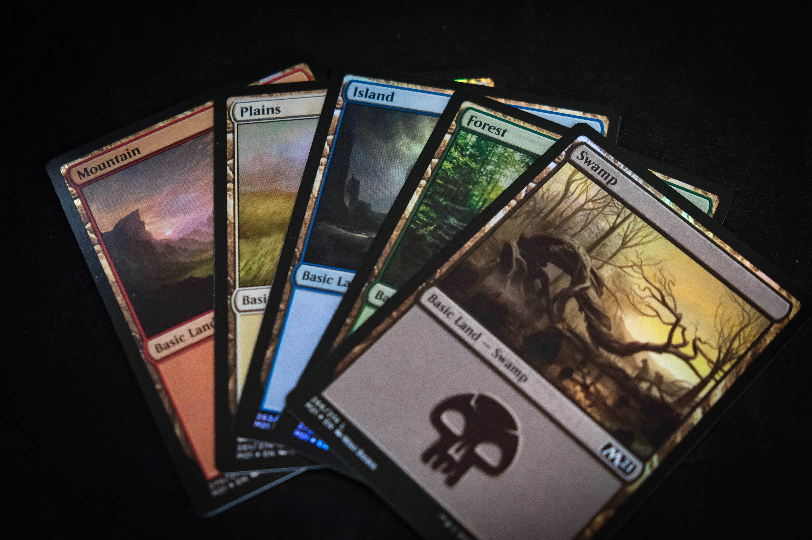

Riot_games
롤
레전드 오브 룬테라
발로란트
Legends of Runeterra
라이엇 카드게임중의 하나로 사람들이 많이 플레이하고있다.

레전드 오브 룬테라(Legends of Runeterra)(LoR)는 라이엇 게임즈가 배급, 제작한 컬렉터블 카드 게임이다. 특이사항은 리그 오브 레전드와 세계관을 공유한다는 것이다. 플랫폼은 윈도, 안드로이드, iOS를 사용한다. 2020년 1월 25일에 PC판 오픈 베타가 출시되었다. 2020년 5월 1일 전세계에서 정식 출시 되었다.